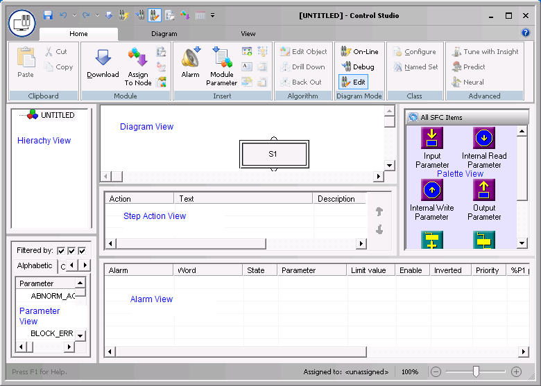

JavaScript must be enabled in order to use this site.Please enable JavaScript in your browser and refresh the page. Create a Sequential Function Chart Restore Control Studio by clicking its button on the Windows task bar. Click the Main button, then click New. In the New dialog, select Control Module or Template as the Object Type. Select Sequential Function Chart as the Algorithm Type, and then click OK. A new SFC diagram opens, with a single step, S1. 